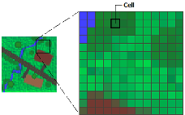
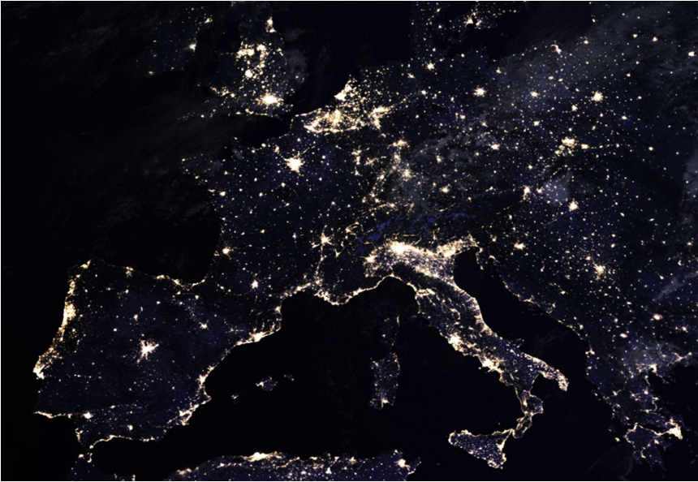
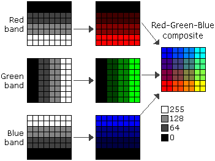
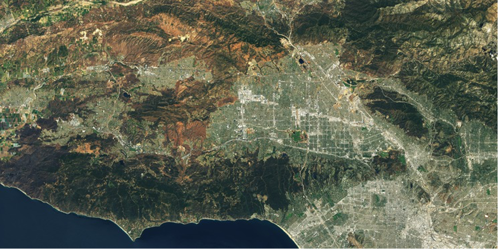

Advanced Geovisualisation
From Pixels to Patterns
Elisabetta Pietrostefani
What is a Raster?
- A grid of pixels — each cell holds a value
- Divides 2D space into regular, equal-sized cells
- Pixel values can represent:
- Continuous variables — elevation, temperature, light intensity
- Categorical variables — land cover class, soil type
- Value assigned by mean, centre point, or aggregation rule
File Formats

Types of Raster Data
Grayscale Rasters
One band, continuous values
- The simplest raster: a single band where pixel brightness encodes magnitude
- Examples: nightlights intensity, radar backscatter, thermal emission

Nightlights Data
Human activity, visible from space
- Darker areas → lower artificial light; brighter areas → higher intensity
- Pixel values represent radiance or luminance of nighttime lights
- Applications:
- Monitoring urban growth and sprawl
- Assessing light pollution
- Proxying economic activity in data-sparse regions
Elevation Rasters
The shape of the land

Digital Elevation Models (DEMs)
- Each pixel value = elevation above sea level at that location
- Foundation for terrain analysis, hydrological modelling, flood risk
- Derived products: slope, aspect, curvature, viewshed
- Widely used in infrastructure planning, disaster response, and ecology
Multispectral Imagery
Beyond Visible Light
What sensors can see that we can’t
- Human eyes perceive 3 bands (red, green, blue)
- Multispectral sensors capture 4–12+ bands across the electromagnetic spectrum
- Each additional band reveals something invisible to the naked eye:
- Plant health, soil moisture, surface temperature, mineral composition
- Different surfaces have distinct spectral signatures — fingerprints in light
The landscape looks very different depending on which wavelengths you’re listening to.
Multispectral Rasters

Landsat Band Table
| Band | Name | Wavelength | Resolution | What it’s good for |
|---|---|---|---|---|
| 1 | Ultra Blue (Coastal/Aerosol) | 0.43–0.45 µm | 30 m | Coastal water, aerosol studies |
| 2 | Blue | 0.45–0.51 µm | 30 m | Water depth, soil/vegetation distinction |
| 3 | Green | 0.53–0.59 µm | 30 m | Peak vegetation reflectance |
| 4 | Red | 0.64–0.67 µm | 30 m | Chlorophyll absorption; vegetation vs bare soil |
| 5 | Near Infrared (NIR) | 0.85–0.88 µm | 30 m | Biomass, vegetation health, water body edges |
| 6 | SWIR-1 | 1.57–1.65 µm | 30 m | Soil moisture, snow/cloud differentiation |
| 7 | SWIR-2 | 2.11–2.29 µm | 30 m | Geology, mineralogy, fire burn scars |
| 8 | Panchromatic | 0.50–0.68 µm | 15 m | High-resolution greyscale — pan-sharpening |
| 9 | Cirrus | 1.36–1.38 µm | 30 m | Detecting high-altitude cirrus cloud contamination |
| 10 | Thermal Infrared (TIRS-1) | 10.6–11.19 µm | 100 m | Surface temperature |
| 11 | Thermal Infrared (TIRS-2) | 11.50–12.51 µm | 100 m | Surface temperature (more accurate dual-band retrieval) |
True Colour: Bands 2, 3 and 4
Blue, green, red — what the eye would see

Resolution: The Fundamental Trade-off
Spatial Resolution
Can you see what you’re looking for?
- Defines the smallest distinguishable feature in an image
- A 1m pixel ≠ a 10m pixel — the difference is a building vs. a blur
- Higher resolution → richer insight into land use, urban change, disaster damage
- But there’s a cost: larger files, more compute, harder to scale
Temporal Resolution
When did that change — and how fast?
- How frequently a sensor revisits the same location
- High temporal resolution lets us watch the world unfold in near real-time:
- Flood progression
- Crop growth cycles
- Urban expansion ️
- The faster things change, the more temporal resolution matters
Data Volume & Storage
The deluge is already here
- Modern satellites generate terabytes per day — and it’s accelerating
- Storage isn’t just a technical problem, it’s a scientific bottleneck
- Traditional on-premise hardware: expensive, slow to scale
- Cloud-based storage: flexible, but raises questions of cost, access, and sovereignty
Where to Get Imagery
- High spatial resolution — costly commercial products
- Lower spatial resolution — free via NASA, ESA, and others:
- USGS Earth Explorer — Landsat, MODIS, and more
- NASA Earthdata Search — full NASA Earth observation catalogue
- Copernicus Open Access Hub — ESA Sentinel imagery (1, 2, 3, 5P)
- AppEEARS (LP DAAC) — easy subsetting of NASA land products
- Landsat on AWS — cloud-hosted Landsat archive
Supervised Classification
Turning Pixels into Meaning
What are we actually doing?
- Every pixel in a multispectral image has a spectral signature — a fingerprint of how it reflects light across bands
- Supervised classification asks: can we teach an algorithm to recognise these fingerprints?
- Goal: assign every pixel a land cover label — urban, rural, water, vegetation…
Why Multispectral for Classification?
More bands = more separability
- Standard RGB: 3 bands — multispectral sensors: 4–12+
- Key bands for urban/rural distinction:
- NIR → healthy vegetation glows; concrete doesn’t
- Red Edge → separates crops from forests
- SWIR → distinguishes built surfaces and bare soil
- More spectral dimensions = classes that overlap in RGB pull apart
Training Points
The human input the algorithm depends on
- You must provide labelled examples of each class — this is the “supervised” part
- Training points tell the classifier: “this is what urban looks like spectrally”
- Quality requirements:
- Representative — capture the variety within each class
- Balanced — avoid over-representing one class
- Accurate — wrong labels poison the model
- Collected via: field survey, manual digitising, or existing land cover datasets
The Classification Pipeline
From labelled points to labelled map
- Define classes — urban, peri-urban, agriculture, forest, water…
- Collect training points — ideally 50–200+ samples per class
- Extract spectral values at training locations
- Train a classifier — Random Forest, SVM, Maximum Likelihood…
- Apply to full image — every pixel gets a label
- Validate — withhold test points, compute accuracy metrics
The pipeline is straightforward. The judgement calls within it are not.
Accuracy Assessment
How do we know if it worked?
- Withhold a test set (20–30% of labelled points) — never used in training
- Build a confusion matrix: where does the classifier get confused?
- Urban misclassified as bare soil?
- Dense vegetation confused with rural settlements?
- Key metrics: Overall Accuracy, Kappa coefficient, Per-class F1
- Urban/rural boundaries are notoriously fuzzy — peri-urban is hard
A 90% accurate map still means 1 in 10 pixels is wrong — at scale, that matters.
☁️ The Cloud Problem
- Clouds are opaque to optical sensors — where there’s cloud, there’s no data
- In tropical regions, cloud cover can exceed 80% of observations year-round
- A single cloudy acquisition can ruin a time-sensitive classification
- Cloud shadows are almost as problematic — spectrally dark, easily confused with water or urban areas
Questions

Geographic Data Science by Elisabetta Pietrostefani is licensed under a Creative Commons Attribution-ShareAlike 4.0 International License.